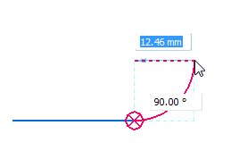

Tangent 3D Arc command
Use the Tangent 3D Arc command to draw an arc tangent to or perpendicular to one or two elements. The first point defines one end of the arc. If you place the first point on a key point of an element you want the arc to be tangent to or perpendicular to, then the second point defines the sweep.

If you place the first point in free space, then this command works like the 3D Arc by 3 Points command. In this case the first point defines an end point. You can then either define a point on the arc and then the end point, or define the end point and then a point on the arc.
Relationships between tangent arcs and tangent lines
Tangent and connect relationships are automatically applied between the end point of an arc and line if the arc created is tangent to the line. Tangent and connect relationships are automatically applied between an arc and the end point of a line if the line created is tangent to the arc.
Arcs tangent to other elements
These relationships in the 3D IntelliSketch group must be set to draw arcs that are tangent to other elements:
-
On Element or End option must be set to draw arcs that are tangent to other elements.
-
Tangent must be set to draw an arc tangent to two elements.
Arc sweep angle
The arc sweep angle locks at quadrant points (0, 90, 180, and 270 degrees) when you place a tangent arc. This allows you to draw the most common arcs without typing values in the Sweep Angle box.
How do I
Draw a 3D sketchCreate a 3D point using coordinates
Modify a 3D point
Create a 3D curve
Dynamically edit a 3D curve
Route a 3D sketch path between 2 points
Route a 3D curve through circular faces
Mirror 3D sketch elements
Create an equation driven curve
Split a 3D sketch element
Move 3D sketch elements
Learn more
Starting a new synchronous 3D sketchStarting a new ordered 3D sketch
Starting a new assembly 3D sketch
3D sketch relationships
Look up more details
New 3D Sketch command3D Sketch command (assembly)
Show 3D alignment lines
Activate command (3D sketching)
Copy Dimensions to Model command
3D Point command
3D Point command bar
3D Line command
3D Circle by Center command
3D Rectangle by Center command
3D Arc by 3 Points command
3D Curve command
3D Curve command bar
OrientXpres tool
Routing Path command
Route command
Equation Driven Curve command
Equation Driven Curve command bar
Equation Driven Curve dialog box
Mirror command (3D Sketching)
3D Fillet command
3D Trim command
3D Include command
Related Topics
Enable Regions command (3D sketching)Split 3D Sketch command